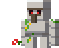

qual e o principal objetivo do manicraft ??
O principal objetivo do jogo é simplesmente construir. Você conta com uma série de ferramentas diferentes, que podem ser utilizadas tanto para coletar materiais quanto como armas. Ao coletar os blocos, o jogador tem a chance de utilizar seus recursos para construir o que bem entender.

quando foi lansado ??
Desta forma, Minecraft virou mais um serviço do que um produto, relação que acabou sendo essencial para seu sucesso. Ele foi lançado oficialmente em 18 de novembro de 2011 e até hoje as atualizações não pararam. Minecraft já fazia sucesso mesmo em sua versão Alpha